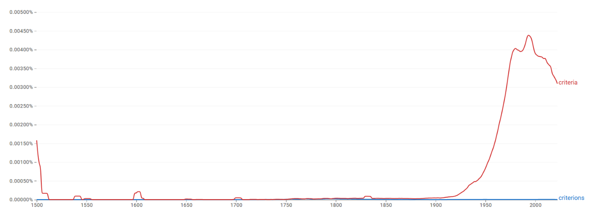
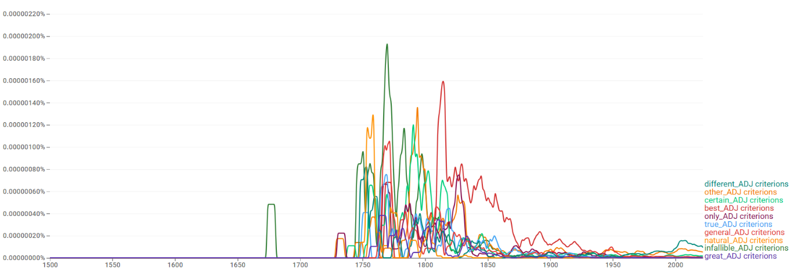
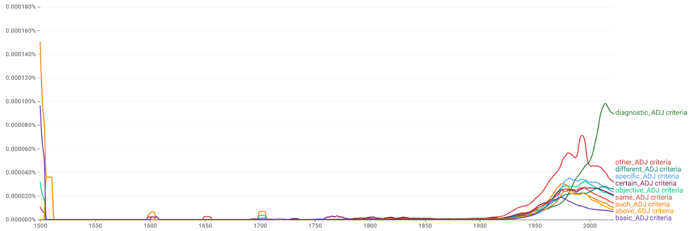
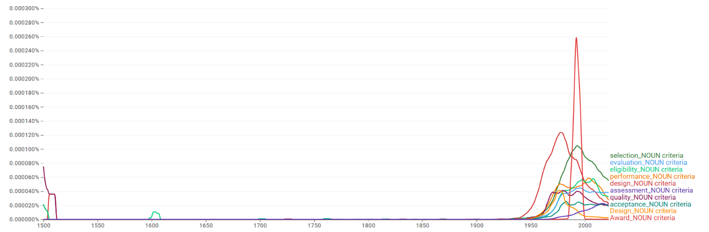
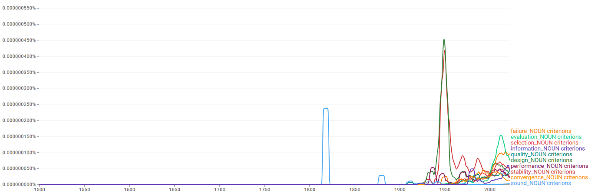
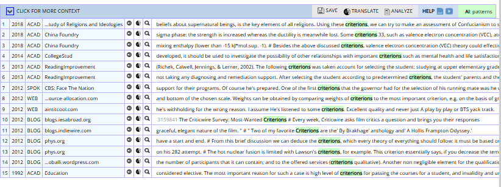
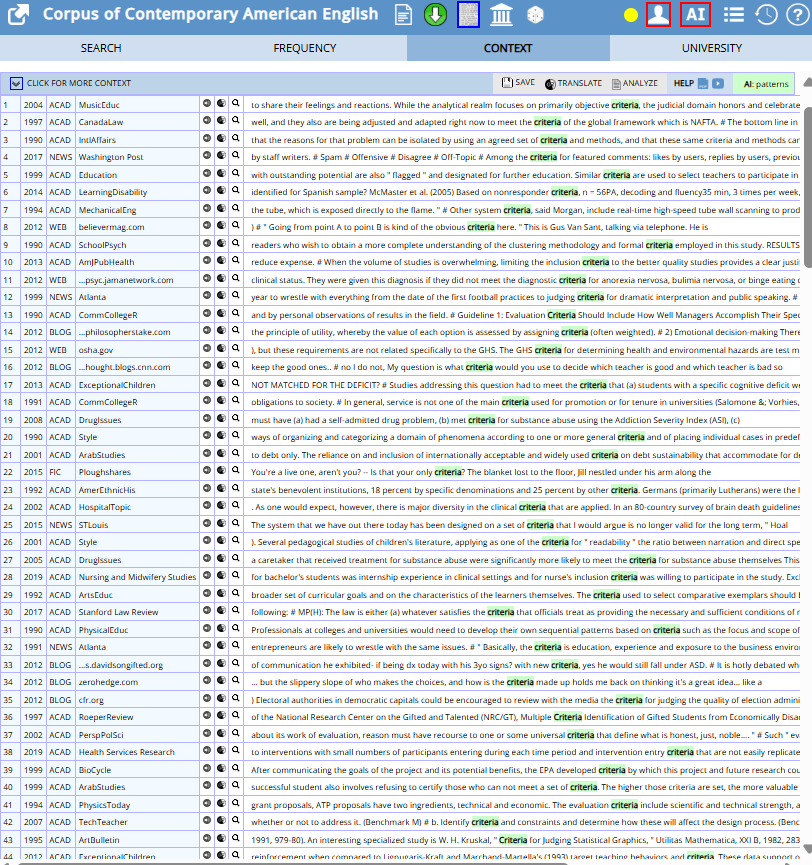
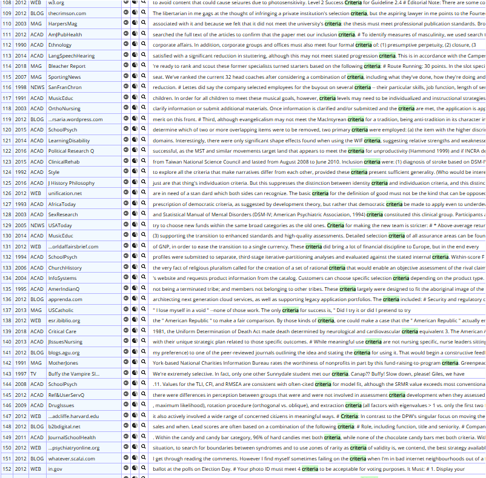

criteria/criterions

결론
criteria와 criterions는 ‘기준’이라는 동일 의미를 공유하지만 뚜렷한 비대칭을 보인다. criteria는 학술·의학·행정·평가 담화의 중심 형태로 자리 잡아 사실상 표준 복수형으로 기능하는 반면, criterions는 제한적·주변적 변이형으로만 남는다. 두 형태의 명확한 사용 분화를 정의하기는 어렵고, 고전형이 중심이 되고 규칙형이 주변 변이형으로 존재하는 양상이므로 고전형 우세 → 빠른 수렴 → 경쟁의 구조다.
연구 결과
과정 및 결론 도달 과정 · 사용 도구
1차 Ngram 사용량 그래프로 고전형의 압도적 우위와 규칙형의 비가시성을, 2차 같은 그래프로 1950년대 이후의 빠른 수렴을 확인했다. 3차는 Ngram 연어(diagnosis 등 의학 결합의 부상)와 COCA 맥락 분석(진단·공적 규정·평가·철학)으로 두 형태가 분명한 의미 분화 없이 경쟁하되 고전형이 표준화된 양상을 해석했다.
세부 정보 · 구간 별 분절
초기에는 두 형태 모두 매우 낮지만, 20세기 중반(특히 1950년대) 이후 고전형 criteria가 가파르게 상승해 20세기 후반 정점에 도달한 뒤에도 높은 수준을 유지한다. 규칙형 criterions는 전 시기에 걸쳐 거의 바닥 수준에 머문다. 현재 criteria가 압도적 우위를 점한다.
비교적 이른 시기부터 criteria가 중심을 확보한 뒤 그 우위를 급격히 강화한 빠른 수렴(고전형 우세 속)의 경로다.
두 형태 모두 other, different, certain 등 일반·추상 연어가 상위에 나타나 사용 분야 차이가 크지 않다. 다만 criteria는 diagnostic/selection/eligibility/performance criteria처럼 의학·행정·평가 등 제도·전문 담화에서 안정적으로 쓰이고, diagnosis 연어가 21세기 들어 두드러지게 상승한다. COCA에서도 criteria는 전문 진단·공적 규정·평가 체계·철학적 정의에 폭넓게 쓰이는 반면, criterions는 개별 기준의 나열·특수 목적의 구체적 조건이라는 제한된 맥락에 한정된다. 뚜렷한 의미 분화 없이 고전형이 표준화된 경쟁 사례다.
criteria는 여러 조건을 묶은 체계적 기준의 집합을 가리키는 의미로 굳어지면서 고전형이 사실상의 표준으로 자리 잡았고, 규칙형 criterions는 주변적 변이형에 머물렀다.
참조 이미지
연어 그래프 · COCA 맥락 캡처 펼치기






